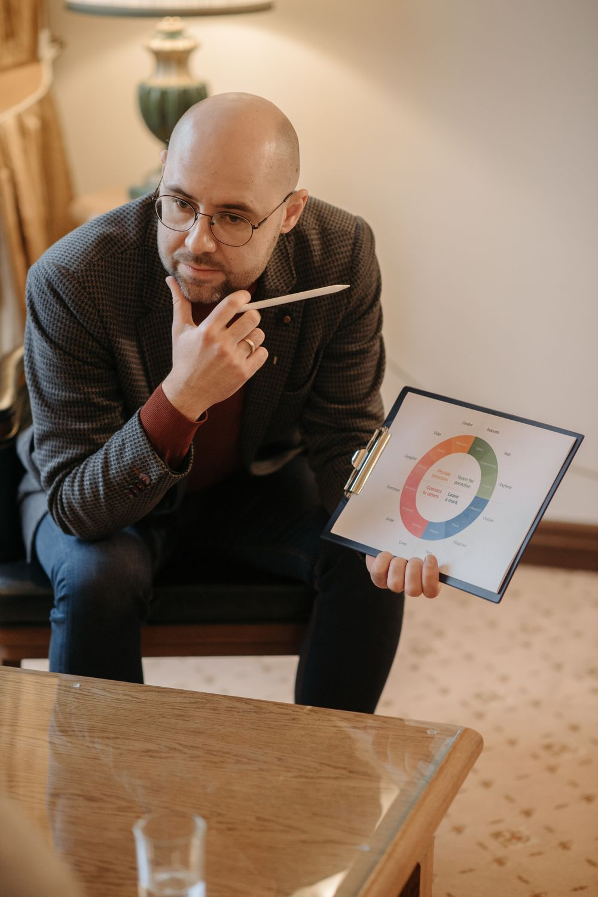

HAKKIMDA
Ben Klinik Psikolog Gamze Korkun. Psikoloji lisans ve Klinik Psikoloji yüksek lisans eğitimimi İzmir Ekonomi Üniversitesi'nde tamamladım.
İnsanların kendileriyle ve başkalarıyla kurdukları ilişkileri, duygusal deneyimlerini ve yaşamları boyunca şekillenen ilişki örüntülerini anlamak, mesleki ilgimin merkezinde yer alıyor. Psikodinamik yaklaşım, kişinin bugünkü deneyimlerini geçmiş yaşantıları, iç dünyası ve ilişkileriyle birlikte ele almama yön veren temel kuramsal çerçevemi oluşturuyor.
Klinik psikoloji yüksek lisans eğitimim sırasında, Psikoloji Uygulama ve Araştırma Merkezi (PUAM) bünyesinde süpervizyon eşliğinde danışan görüşmeleri yürüttüm. Bu süreçte klinik ön görüşme, psikolojik değerlendirme ve psikodinamik çerçevede vaka formülasyonu alanlarında uygulamalı deneyim kazandım.
Çocukların ve ergenlerin gelişimsel süreçleri, aile ilişkileri ve bireyin kendilik algısının oluşumu da mesleki ilgi alanlarım arasında yer alıyor. Çocuk ve aile çalışmaları kapsamında edindiğim deneyimler ile mesleki eğitimlerim, farklı gelişim dönemlerini ve ilişkisel bağlamları anlamaya yönelik ilgimi destekledi.
Psikolojik deneyimlere merakla ve özenle yaklaşmayı önemsiyorum. Her insanın deneyimi kendine özgüdür. Bu nedenle her insanın yaşadıklarını kendi koşulları, duyguları ve ilişkileri içinde anlamaya çalışmanın önemli olduğuna inanıyorum. Bunun, hazır cevaplardan çok dikkatle dinlemeyi ve kişinin deneyimini anlamaya açık olmayı gerektirdiğini düşünüyorum.
Mesleki gelişimimi bilimsel bilgiyi takip ederek, farklı kuramsal perspektifleri öğrenerek ve kendi klinik bakışımı derinleştirerek sürdürmeye önem veriyorum.
PSİKOTERAPİ YAKLAŞIMLARI
Psikoterapi, kişinin duygusal deneyimlerini, düşüncelerini ve ilişki örüntülerini farklı kuramsal çerçeveler ışığında ele alır. Aşağıda bu yaklaşımlara ilişkin kısa bilgiler bulabilirsiniz.

SIKÇA SORULAN SORULAR
Terapiye başlamadan önce ve süreç boyunca merak edebileceğiniz sorular.
Psikoterapiye başlamak için bir tanı almış olmam gerekir mi?
Psikoterapiye başvurmak için önceden bir tanı almış olmanız gerekmez. Kaygı, üzüntü, ilişkilerde zorlanma, kayıp ya da yaşam değişiklikleri destek arama nedenleri olabilir. Kendinizi ve tekrar eden deneyimlerinizi daha iyi anlamak istemeniz de bir başlangıç noktasıdır. İlk görüşmeler, ihtiyaçlarınızı ve psikoterapinin size uygunluğunu değerlendirmeye yardımcı olur.
İlk görüşmede neler konuşulur, hazırlık yapmalı mıyım?
İlk görüşmede sizi destek aramaya yönelten nedenler, güncel güçlükleriniz ve süreçten beklentileriniz ele alınır. Özel bir hazırlık yapmanız gerekmez; isterseniz konuşmak istediğiniz konuları not edebilirsiniz. Görüşmelerin çerçevesi, ücret, sıklık ve gizlilik gibi konular hakkında da bilgi alabilir, aklınızdaki soruları sorabilirsiniz.
Ne anlatacağımı bilmiyorsam veya bazı konuları konuşmaya hazır değilsem ne olur?
Nereden başlayacağınızı bilememek ya da bazı deneyimleri anlatmakta zorlanmak anlaşılır bir durumdur. Bu güçlüğü de görüşmede paylaşabilirsiniz. İlk seansta her şeyi anlatmanız beklenmez; sizi zorlayan konulara hazır oluşunuz ve ihtiyaçlarınız gözetilerek yaklaşılır. Konuşmak istemediğiniz bir konu olduğunu söyleyebilir, bunun sizin için ne anlama geldiğini birlikte ele alabilirsiniz.
Terapi ne kadar sürer ve görüşmeler ne sıklıkla yapılır?
Herkes için geçerli tek bir seans sayısı yoktur. Süreç; başvuru nedenine, ihtiyaçlarınıza, hedeflerinize ve kullanılan yaklaşıma göre değişebilir. Görüşmelerin süresi ve sıklığı başlangıçta konuşulur; ilerleyen dönemde ihtiyaçlar doğrultusunda yeniden değerlendirilir. Kısa sürede kesin sonuç ya da önceden belirlenmiş bir iyileşme tarihi vaat etmek doğru olmaz.
Görüşmelerde paylaştıklarım gizli kalır mı?
Gizlilik, psikoterapinin temel ilkelerinden biridir. Ancak gizliliğin kapsamı ve sınırları vardır; bunlar sürecin başlangıcında açıklanmalıdır. Kişinin kendisi veya başkaları açısından ciddi bir güvenlik riski gibi durumlar gizlilik açısından ayrıca değerlendirilir. Bilgilerin hangi koşullarda, kimlerle ve ne amaçla paylaşılabileceğini ilk görüşmede sorabilirsiniz.
Terapi sürecinde ilerlemeyi nasıl değerlendirebilirim?
İlerleme yalnızca daha iyi hissetmekle sınırlı değildir; duygularınızı fark etmek, ilişkilerinizdeki örüntüleri anlamak ve güçlüklerle baş etme biçimlerinizde değişiklik görmek de önemlidir. Süreç zaman zaman zorlayıcı olabilir. İlerlemediğinizi düşünüyor ya da görüşmelerde anlaşılmadığınızı hissediyorsanız bunu terapistinizle konuşabilirsiniz. Hedefler, çalışma biçimi ve gerektiğinde farklı destek seçenekleri birlikte değerlendirilebilir.
Merak ettiğiniz diğer konular için iletişime geçebilirsiniz.